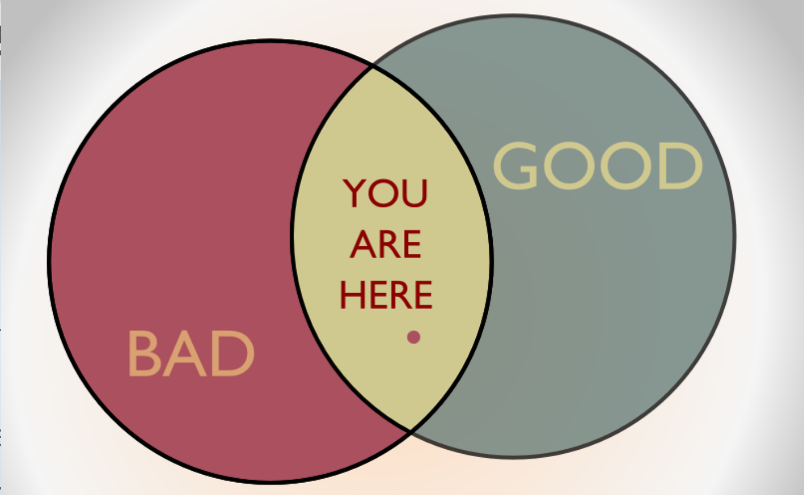

III. How and why do non-state actors use political violence?
Justin Leinaweaver (Fall 2025)
“Terrorism”
1) Concept
2) Case studies
3) Operationalization
4) Instrumentation
5) Measurement
Jaggar (2005) Defines Terrorism
“Now suppose there is a desperate bandit lurking in the fields and one thousand men set out in pursuit of him. The reason all look for him as they would a wolf is that each one fears that he will arise and harm him. This is the reason one man willing to throw away his life is enough to terrorize a thousand.”
— Chinese military philosopher Wu Ch’i
Jaggar (2005): A Moral Terrorism?
Just cause
Competent authority
Right intention
Proportionality
Last resort
Reasonable hope of success
Aim of peace

Jaggar (2005): A Moral Terrorism?
Just cause
Competent authority
Right intention
Proportionality
Last resort
Reasonable hope of success
Aim of peace
Explore the data and codebook for the RAND Database of Worldwide Terrorism Incidents